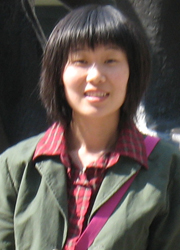

立志如山，行道如水
尊敬的各位老师、同学：
大家好！我是生命科学学院05级生物技术专业黄彬璐。很荣幸能有机会与大家分享我的经历与体会，希望能够对大家有所帮助。
记得高中有次政治课，老师给我们看了2004年央视经济年度人物的颁奖典礼，牢牢地记住了阿里巴巴的马云陈述梦想时说过的一句话，“今天很残酷，明天也很残酷，后天很美好，但是绝大多数人都死在明天晚上，所以每个人不要放弃今天”。是的，正是在关键时刻那份坚持的力量，支撑着阿里巴巴和马云渡过最困难的时期，才能取得今天这样辉煌的成就。而我，也曾是一名坐在观众席中，听着理想
大家好！我是生命科学学院05级生物技术专业黄彬璐。很荣幸能有机会与大家分享我的经历与体会，希望能够对大家有所帮助。
记得高中有次政治课，老师给我们看了2004年央视经济年度人物的颁奖典礼，牢牢地记住了阿里巴巴的马云陈述梦想时说过的一句话，“今天很残酷，明天也很残酷，后天很美好，但是绝大多数人都死在明天晚上，所以每个人不要放弃今天”。是的，正是在关键时刻那份坚持的力量，支撑着阿里巴巴和马云渡过最困难的时期，才能取得今天这样辉煌的成就。而我，也曾是一名坐在观众席中，听着理想
成才报告团成员演讲的普通学生，在信念的指引下，坚定地去奋斗，到现在取得一点小小的成绩，并且，有幸作为报告团的一员，给大家讲述我的故事。08-09赛季，NBA官方宣传口号正式变为“Where Amazing Happens”，毫不夸张地说，于我而言，师大同样amazing。在师大近四年的时间里，我获得了国家奖学金，校长奖学金，生命科学学院“梁佩仪奖学金”，学有专长奖学金，校“学术十佳”称号，连续两次获得“优秀学生”称号；连续两年参加学校科研立项，成功申请大学生国家创新性实验计划项目，参与的论文发表在SCI杂志《Blood Cells, Molecules, and Diseases》上。在最后学院的保研中，以综合成绩排名第一获得外保资格。又经过积极寻找资料，联系导师，争取到在北大生物膜与膜生物工程国家重点实验室实习的机会，同时获得了北大和清华的推荐免试生面试的机会，最后选择并通过清华的面试，成功保送到清华大学生物科学与技术系，成为发育生物学专业的一名直博生。
然而，走到现在，选择生物，却纯属偶然。一直以来，我都有种对外语的偏爱，从初中开始接触英语，觉得自己就是和外语有缘，学得不错，也很开心。高考填报志愿时，则是毫不犹豫地选择了上海外国语大学。只可惜，上天给了我沉重的打击，那年我考了600分，上外的录取线却是616，被无情地拒之门外！于是，随之而来了一个好消息和一个坏消息。好消息是我被二志愿的东北师范大学录取了，坏消息是我被录取在生物专业，当时一个不经意的选择却要成为我四年乃至更长时间的学习内容。怎么办？生物是我高中里学得最差的一门课，总分72的生物我也就能得二三十分，我简直不敢想象自己要去读这个专业。可是，不想复读的我，不敢面对也得面对。金秋九月，我独自一人茫然地来到师大。次年春暖花开，大一上学期期末考试的成绩却让我心都凉了：我只是排在了年级47，而一个年级总共才119人，你们能想象吗？当时，不要说清华，不要说SCI，连个最低的三等奖学金都是我不敢奢望的。又是抉择的时候了，我问自己，到底何去何从？要不要转专业，要不要去学外语？冷静下来分析，虽然我没能学好生物专业课，但那可能是因为我没能及时适应高中到大学学习模式的转变。我始终认为，有句话说得真好——“世上无难事，只怕有心人”，只要有信心有付出，就会有回报！与此同时，通过一个学期对生物的接触，我惊讶地发现，生命原来真的好神奇：为什么向日葵比恋人还恋着太阳，一直跟着转呢？为什么有的人感冒不吃药却也能自己恢复健康呢？为什么从蝌蚪到青蛙，机体能主动地、精确地只让尾部的细胞发生凋亡从而使尾巴消失来完成变态呢？我不得不感叹，小小的细胞却有如此精致的调控系统，我渴望着自己能够进一步去探求生命！另外，随时关注新闻的我发现，虽然现在的医疗技术越来越先进，但依然存在着一些难以攻克的疾病，夺去了许多人的健康，比如说癌症，比如说心血管疾病等。而学生物恰恰给我提供了一个最直接的机会去研究疾病的机理。我不敢保证自己将来一定能研究出什么成果立刻被应用到实践中，但我坚信，基础研究必然在十年、二十年甚至百年之后给人以启发。而对自己研究方向的肯定和期待，将是鼓舞我前进最好的动力！于是我决定再给自己一次机会，外语作为兴趣可以利用业余时间再发展，而对生物而言，要是这次放弃了可能我就再也没机会学习了。“机会很多，只能抓一个，抓多了，什么都会丢掉。”既然学到现在，有了对生物的兴趣，即使前方再难再坎坷，我也要坚定地走下去！我相信，同为师大的学生，我不比别人差，我再坚持一下，一定能学成。于是，除了做好最基本的上课认真听讲，下课及时复习，我捡起了曾经放下的“好问”精神。每门专业课，复习之后马上记下自己不会、不懂、想不明白的问题，哪怕问题再小再简单，也要向老师请教。春夏秋冬的轮回里，我踏遍了几乎每个专业课老师的办公室，解决了当时所能遇到的所有基本的专业基础问题。可以说，坚定信念、及时思考、追根究底是我进步的关键，也是我最最想给大家的建议。正是凭着这“打破沙锅璺到底”的精神，大一学年末我上升到第18名，大二升至第二，大三第三，并在最后前五学期总排名中排在第一。
专业知识的巩固，为我接下来展开实验打下了一定的基础。05年刚入大学，我就进入黄百渠教授实验室。黄老师是学院里科研工作十分突出、非常受人尊敬的长江学者、博士生导师，我有幸在他的实验室学习基本的实验技术，参加学校科研立项。进入实验室以来，从最早学习实验仪器的操作，到每个简单的实验技术的学习、实践，到实验设计、思路的探索、分析、思考，可以说，我的科研素养慢慢地在锻炼中得到成长。所以在我看来，科研是个逐渐积累的过程。进实验室，先学习，再动手，再思考，等时机成熟了，再尽可能地去科研创新，去实现自己的科研梦想！正是之前的努力，三年后的08年6月，我参与的关于丁酸钠诱导红系细胞基因分化的分子机制的研究论文发表在SCI杂志上。然而，科研之路无穷无尽，取得的成绩都是过去的，前方还有更多的挑战！大二开始，我们小组根据自己的兴趣，针对性地选择了一个肿瘤相关基因作为研究对象。查阅大量文献后我们发现，该基因能够显著抑制结肠癌细胞的增殖，同时，众所周知的药物——阿司匹林也对结肠癌细胞有明显的抑制作用，那么我们想要知道：阿司匹林是不是通过这个基因来抑制结肠癌细胞的增殖？如果是的话，又是如何来发挥作用的？我们相信，初步分子机制的探求，是进一步研究的基础，甚至能够为将来设计肿瘤治疗药物提供参考，这个意义无疑是令人心动的！带着这样的疑问，满怀这样的热情，我们开展了一系列的实验。
不过，科研并不像想象中的一帆风顺。比如，本科大实验就做过的克隆实验，当它真正被应用到科研中时，情况变得异常复杂。从最早的提取基因组到PCR扩增、酶切、连接、转化、挑菌再到最后的小提质粒，每个环节，我们几乎都出现过或大或小的问题。出现的问题千奇百怪，没有人能给出教科书似的标准的解决方法，既然这样，我们只能自己努力去探求问题的答案！于是，我上网查阅相关资料，搜寻生物论坛中的各种点子，向师兄师姐请教，又设对照又设重复，尝试了多种不同的解决办法，一次一次的尝试，简直到了山穷水尽没有路的地步。在这期间，虽然失败了无数次，但我仍然坚持着：大二大三的课程很多，技术班统一安排的大实验也很多，没有足够的空余时间来做实验，怎么办？那就只能充分挖掘个人的周末休闲时间、假期时间，时间总是一点一点挤出来的。清楚地记得，和室友们说好一起去逛街的日子一拖再拖，直到没影儿；和朋友们的聚餐只好让大家先点菜先吃，忙完实验赶紧冲过去收拾“残局”再赶回实验室接着奋战；为小长假打算好的旅游更是只能忍痛放弃……不过，终于有一天，当电泳验证，看到紫外灯下扫出了一条亮亮的目的条带正是我们想要的结果时，那一刻，我真的觉得所有的付出都是值得的。正是有这份坚持，我们一步又一步完成预定的实验任务。都说大四是该好好享受大学生活的一年，然而，直到现在，我仍然泡在实验室，随时关注那温箱中培养着的细胞，每天到实验室的第一件事就是去培养室看看细胞，看看长得满不满，瘦不瘦，状态好不好，有没有被污染，该给营养给营养，该给空间给空间，简直比宝贝还宝贝。同时，随着毕业的临近，更是加紧实验进程，以期早日获得更理想的实验结果。目前我们的项目正在准备参加吉林省挑战杯课外学术作品大赛，实验进展也得到了吉林大学等长春市其他高校专家们的肯定，成果则将在SCI杂志《Cancer Lett》上发表。
曾有人夸张地说，科研是条不归路，选择了科研，就是把自己卖给了科研。进入实验室后我不得不惊叹Wow，原来传说中的那些科学家要通宵达旦、日夜兼程果然是真的！去年暑假，我有幸联系到北大一个实验室去实习，在那里大约一个星期的时间里，我几乎每天早上8点左右从北大西门外的蔚秀园走到北大东门的生物楼，径直到实验室，连近在咫尺的未名湖都无暇欣赏，也终于明白了当年大禹为什么能够忙到三顾家门而不入。然后晚上十一二点回招待所，平时容易失眠的我都累得沾枕头就着。直到现在，每每回忆起那次晚上十二点才从实验室离开，走在白天熙熙攘攘、现在只有孤星散落的大道上，心里真是说不出的酸楚。那个时候，每天除了吃饭时间，就基本一直处于实验状态，并且几乎没有按正点吃过几顿饭，因为实验不等人。而最恐怖的是，我发现有的师兄师姐为了做实验经常要熬到半夜两三点，甚至睡在实验室！在那个星期，我几乎没有一天能够睡醒，在座的大家想象一下，把这个星期的工作扩大到我即将面对的读博的5年甚至6年，而一年只有4周假期，有的时候为了实验却又不得不主动放弃假期，那将会是一种什么样的生活！也许你们会问我为什么科研这么苦却还要做？答案就是绝对的兴趣，感谢兴趣这位最好的老师，它教会了我如何选择方向，也给予了我前进的动力。没有兴趣，我不会冒然去做科研；没有兴趣，我就不会在科研这条崎岖不平的道路上坚持下去。我坚信，兴趣在左，坚持在右，机遇也会不期而至。当万事俱备只欠东风，砸到牛顿的那个苹果也会砸到你，这样，就成功了。
如果说，科研、学习是我大学生活的主题曲，那么，学生工作和课外活动则是其中必不可少的音符。想起大一时闯入校英语十佳大赛时的那份激动；想起红烛志愿者协会十五周年庆上红烛人用手语打出我们自己的会歌的那份感动；想起向东亚经贸新闻的记者介绍我们生科院和文学院共同主办的预防艾滋系列活动之同伴教育活动的那份从容，可以说，从最早的班级团支书到生科院红烛分会长、马列协会分会长，从一名普通的团员到光荣的共产党员。在一次次活动的举办中，我提升了自己的能力；在身份的转变中，我欣喜地感受到了自己的成长。
今年夏天，我即将离开亲爱的师大，除了不舍还是不舍。不舍美丽恬静而又活泼的师大校园，不舍曾给予过我无数帮助与关怀的老师们、朋友们。由衷地感谢师大给了我们最好的学习环境，配备了最优秀的师资力量，提供了最完善、先进的科研平台。尤其是我们师大的实验室硬件条件，完全不落后于北大、清华、复旦等国内一流的大学。我深深地感受到，没有师大的强大依托，何来我今日的成绩。我想，我必将在以后的日子里更加努力，取得更好的成绩来回报师大。
记得有这样一句话，“成功的花儿，人们往往惊羡于她现时的明艳，然而当初她的芽却浸透着拼搏的汗水和奋斗的艰辛。”回想难忘的大学生活，我不敢说自己有多么成功，但是，我可以自豪地说，我的大学是无悔的，为追梦，我拼搏过、奋斗过，在成长的这条路上，虽有荆棘坎坷，却也是一路欢歌。每个人都有属于自己的路，每条路都是正确的，所以请坚定你自己感兴趣的路，祝大家都越走越好！（最后的最后，好想告诉你们，亲爱的们，我比你们自己都希望你们能够成功。祝福你们！）谢谢！
然而，走到现在，选择生物，却纯属偶然。一直以来，我都有种对外语的偏爱，从初中开始接触英语，觉得自己就是和外语有缘，学得不错，也很开心。高考填报志愿时，则是毫不犹豫地选择了上海外国语大学。只可惜，上天给了我沉重的打击，那年我考了600分，上外的录取线却是616，被无情地拒之门外！于是，随之而来了一个好消息和一个坏消息。好消息是我被二志愿的东北师范大学录取了，坏消息是我被录取在生物专业，当时一个不经意的选择却要成为我四年乃至更长时间的学习内容。怎么办？生物是我高中里学得最差的一门课，总分72的生物我也就能得二三十分，我简直不敢想象自己要去读这个专业。可是，不想复读的我，不敢面对也得面对。金秋九月，我独自一人茫然地来到师大。次年春暖花开，大一上学期期末考试的成绩却让我心都凉了：我只是排在了年级47，而一个年级总共才119人，你们能想象吗？当时，不要说清华，不要说SCI，连个最低的三等奖学金都是我不敢奢望的。又是抉择的时候了，我问自己，到底何去何从？要不要转专业，要不要去学外语？冷静下来分析，虽然我没能学好生物专业课，但那可能是因为我没能及时适应高中到大学学习模式的转变。我始终认为，有句话说得真好——“世上无难事，只怕有心人”，只要有信心有付出，就会有回报！与此同时，通过一个学期对生物的接触，我惊讶地发现，生命原来真的好神奇：为什么向日葵比恋人还恋着太阳，一直跟着转呢？为什么有的人感冒不吃药却也能自己恢复健康呢？为什么从蝌蚪到青蛙，机体能主动地、精确地只让尾部的细胞发生凋亡从而使尾巴消失来完成变态呢？我不得不感叹，小小的细胞却有如此精致的调控系统，我渴望着自己能够进一步去探求生命！另外，随时关注新闻的我发现，虽然现在的医疗技术越来越先进，但依然存在着一些难以攻克的疾病，夺去了许多人的健康，比如说癌症，比如说心血管疾病等。而学生物恰恰给我提供了一个最直接的机会去研究疾病的机理。我不敢保证自己将来一定能研究出什么成果立刻被应用到实践中，但我坚信，基础研究必然在十年、二十年甚至百年之后给人以启发。而对自己研究方向的肯定和期待，将是鼓舞我前进最好的动力！于是我决定再给自己一次机会，外语作为兴趣可以利用业余时间再发展，而对生物而言，要是这次放弃了可能我就再也没机会学习了。“机会很多，只能抓一个，抓多了，什么都会丢掉。”既然学到现在，有了对生物的兴趣，即使前方再难再坎坷，我也要坚定地走下去！我相信，同为师大的学生，我不比别人差，我再坚持一下，一定能学成。于是，除了做好最基本的上课认真听讲，下课及时复习，我捡起了曾经放下的“好问”精神。每门专业课，复习之后马上记下自己不会、不懂、想不明白的问题，哪怕问题再小再简单，也要向老师请教。春夏秋冬的轮回里，我踏遍了几乎每个专业课老师的办公室，解决了当时所能遇到的所有基本的专业基础问题。可以说，坚定信念、及时思考、追根究底是我进步的关键，也是我最最想给大家的建议。正是凭着这“打破沙锅璺到底”的精神，大一学年末我上升到第18名，大二升至第二，大三第三，并在最后前五学期总排名中排在第一。
专业知识的巩固，为我接下来展开实验打下了一定的基础。05年刚入大学，我就进入黄百渠教授实验室。黄老师是学院里科研工作十分突出、非常受人尊敬的长江学者、博士生导师，我有幸在他的实验室学习基本的实验技术，参加学校科研立项。进入实验室以来，从最早学习实验仪器的操作，到每个简单的实验技术的学习、实践，到实验设计、思路的探索、分析、思考，可以说，我的科研素养慢慢地在锻炼中得到成长。所以在我看来，科研是个逐渐积累的过程。进实验室，先学习，再动手，再思考，等时机成熟了，再尽可能地去科研创新，去实现自己的科研梦想！正是之前的努力，三年后的08年6月，我参与的关于丁酸钠诱导红系细胞基因分化的分子机制的研究论文发表在SCI杂志上。然而，科研之路无穷无尽，取得的成绩都是过去的，前方还有更多的挑战！大二开始，我们小组根据自己的兴趣，针对性地选择了一个肿瘤相关基因作为研究对象。查阅大量文献后我们发现，该基因能够显著抑制结肠癌细胞的增殖，同时，众所周知的药物——阿司匹林也对结肠癌细胞有明显的抑制作用，那么我们想要知道：阿司匹林是不是通过这个基因来抑制结肠癌细胞的增殖？如果是的话，又是如何来发挥作用的？我们相信，初步分子机制的探求，是进一步研究的基础，甚至能够为将来设计肿瘤治疗药物提供参考，这个意义无疑是令人心动的！带着这样的疑问，满怀这样的热情，我们开展了一系列的实验。
不过，科研并不像想象中的一帆风顺。比如，本科大实验就做过的克隆实验，当它真正被应用到科研中时，情况变得异常复杂。从最早的提取基因组到PCR扩增、酶切、连接、转化、挑菌再到最后的小提质粒，每个环节，我们几乎都出现过或大或小的问题。出现的问题千奇百怪，没有人能给出教科书似的标准的解决方法，既然这样，我们只能自己努力去探求问题的答案！于是，我上网查阅相关资料，搜寻生物论坛中的各种点子，向师兄师姐请教，又设对照又设重复，尝试了多种不同的解决办法，一次一次的尝试，简直到了山穷水尽没有路的地步。在这期间，虽然失败了无数次，但我仍然坚持着：大二大三的课程很多，技术班统一安排的大实验也很多，没有足够的空余时间来做实验，怎么办？那就只能充分挖掘个人的周末休闲时间、假期时间，时间总是一点一点挤出来的。清楚地记得，和室友们说好一起去逛街的日子一拖再拖，直到没影儿；和朋友们的聚餐只好让大家先点菜先吃，忙完实验赶紧冲过去收拾“残局”再赶回实验室接着奋战；为小长假打算好的旅游更是只能忍痛放弃……不过，终于有一天，当电泳验证，看到紫外灯下扫出了一条亮亮的目的条带正是我们想要的结果时，那一刻，我真的觉得所有的付出都是值得的。正是有这份坚持，我们一步又一步完成预定的实验任务。都说大四是该好好享受大学生活的一年，然而，直到现在，我仍然泡在实验室，随时关注那温箱中培养着的细胞，每天到实验室的第一件事就是去培养室看看细胞，看看长得满不满，瘦不瘦，状态好不好，有没有被污染，该给营养给营养，该给空间给空间，简直比宝贝还宝贝。同时，随着毕业的临近，更是加紧实验进程，以期早日获得更理想的实验结果。目前我们的项目正在准备参加吉林省挑战杯课外学术作品大赛，实验进展也得到了吉林大学等长春市其他高校专家们的肯定，成果则将在SCI杂志《Cancer Lett》上发表。
曾有人夸张地说，科研是条不归路，选择了科研，就是把自己卖给了科研。进入实验室后我不得不惊叹Wow，原来传说中的那些科学家要通宵达旦、日夜兼程果然是真的！去年暑假，我有幸联系到北大一个实验室去实习，在那里大约一个星期的时间里，我几乎每天早上8点左右从北大西门外的蔚秀园走到北大东门的生物楼，径直到实验室，连近在咫尺的未名湖都无暇欣赏，也终于明白了当年大禹为什么能够忙到三顾家门而不入。然后晚上十一二点回招待所，平时容易失眠的我都累得沾枕头就着。直到现在，每每回忆起那次晚上十二点才从实验室离开，走在白天熙熙攘攘、现在只有孤星散落的大道上，心里真是说不出的酸楚。那个时候，每天除了吃饭时间，就基本一直处于实验状态，并且几乎没有按正点吃过几顿饭，因为实验不等人。而最恐怖的是，我发现有的师兄师姐为了做实验经常要熬到半夜两三点，甚至睡在实验室！在那个星期，我几乎没有一天能够睡醒，在座的大家想象一下，把这个星期的工作扩大到我即将面对的读博的5年甚至6年，而一年只有4周假期，有的时候为了实验却又不得不主动放弃假期，那将会是一种什么样的生活！也许你们会问我为什么科研这么苦却还要做？答案就是绝对的兴趣，感谢兴趣这位最好的老师，它教会了我如何选择方向，也给予了我前进的动力。没有兴趣，我不会冒然去做科研；没有兴趣，我就不会在科研这条崎岖不平的道路上坚持下去。我坚信，兴趣在左，坚持在右，机遇也会不期而至。当万事俱备只欠东风，砸到牛顿的那个苹果也会砸到你，这样，就成功了。
如果说，科研、学习是我大学生活的主题曲，那么，学生工作和课外活动则是其中必不可少的音符。想起大一时闯入校英语十佳大赛时的那份激动；想起红烛志愿者协会十五周年庆上红烛人用手语打出我们自己的会歌的那份感动；想起向东亚经贸新闻的记者介绍我们生科院和文学院共同主办的预防艾滋系列活动之同伴教育活动的那份从容，可以说，从最早的班级团支书到生科院红烛分会长、马列协会分会长，从一名普通的团员到光荣的共产党员。在一次次活动的举办中，我提升了自己的能力；在身份的转变中，我欣喜地感受到了自己的成长。
今年夏天，我即将离开亲爱的师大，除了不舍还是不舍。不舍美丽恬静而又活泼的师大校园，不舍曾给予过我无数帮助与关怀的老师们、朋友们。由衷地感谢师大给了我们最好的学习环境，配备了最优秀的师资力量，提供了最完善、先进的科研平台。尤其是我们师大的实验室硬件条件，完全不落后于北大、清华、复旦等国内一流的大学。我深深地感受到，没有师大的强大依托，何来我今日的成绩。我想，我必将在以后的日子里更加努力，取得更好的成绩来回报师大。
记得有这样一句话，“成功的花儿，人们往往惊羡于她现时的明艳，然而当初她的芽却浸透着拼搏的汗水和奋斗的艰辛。”回想难忘的大学生活，我不敢说自己有多么成功，但是，我可以自豪地说，我的大学是无悔的，为追梦，我拼搏过、奋斗过，在成长的这条路上，虽有荆棘坎坷，却也是一路欢歌。每个人都有属于自己的路，每条路都是正确的，所以请坚定你自己感兴趣的路，祝大家都越走越好！（最后的最后，好想告诉你们，亲爱的们，我比你们自己都希望你们能够成功。祝福你们！）谢谢！